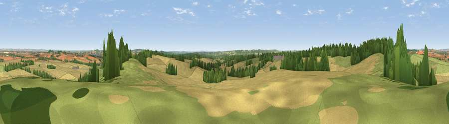

Viewpoint near Broughton
#12635 in England · top 5% of its area beats it · near BroughtonWhere it is
The exact computed spot (SU 28425 33125). Click the marker for map links.
The view, rendered

A 360° render of this exact spot computed from the terrain model, tree cover and land cover — summer colours, afternoon light, calibrated against photographs of famous viewpoints. Real trees, hedges and buildings will differ in detail.
The panorama
Grey silhouette: terrain skyline in each direction (720 bearings, Earth curvature and refraction included). Dashed green: skyline with trees (+15 m) and buildings (+8 m) as obstacles. Blue strip: how far the ground is visible on each bearing.
Where the view opens
Wedge length = distance to the farthest visible ground on that bearing (vegetation-aware). Rings at 10, 25 and 50 km.
What fills the view
57% cropland · 26% grassland · 16% woodland ·
Angular shares of the visible panorama (visual magnitude), not map area. Landscape diversity 0.43 (0–1 Shannon).
Key numbers
More beautiful places nearby
The staircase of upgrades: each row has a higher view potential than everything closer. Driving times are estimates from straight-line distance, calibrated against real road routing — check an actual route before setting out.
| Place | Direction | Drive | Score |
|---|---|---|---|
| Viewpoint near Broughton | ESE · 0 km | ~1 min | 60.5 |
| Kent's Wood | NW · 1 km | ~4 min | 60.9 |
| Viewpoint near Grateley | NNW · 9 km | ~19 min | 61.1 |
| Viewpoint near Stockbridge | ENE · 10 km | ~20 min | 63.3 |
| Viewpoint near Bulford | NW · 13 km | ~24 min | 70.3 |
| Beacon Hill | NE · 30 km | ~47 min | 76.7 |
| Martinsell viewpoint | NNW · 32 km | ~50 min | 76.9 |
| Viewpoint near Berwick St John | WSW · 38 km | ~57 min | 78.2 |
51.09673, -1.59545 · source: screening · position refined by local search. Computed location — check access rights before visiting.